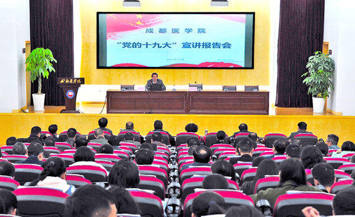
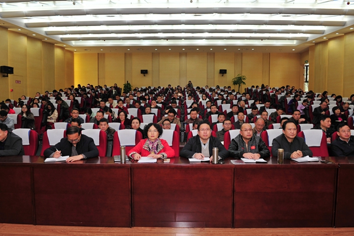

社会主义核心价值观
社会主义核心价值观
2017年11月22日 10:22 王海川 郑小梅 点击：[153]
11月21日，学习贯彻党的十九大精神省委宣讲团高校宣讲分团在成都医学院举行了党的十九大精神宣讲报告会，分团成员、四川省社会科学院盛毅研究员作主题报告。学院党委书记余小平主持报告会，党委常委、委员、科级以上领导干部、教研室（实验室）主任、党支部书记、马克思主义学院教师、辅导员、学生代表以及学校宣讲团成员聆听了报告会。  
在两个多小时的宣讲过程中，盛毅从党的十九大的主题、主要成果，习近平新时代中国特色社会主义思想等九个方面深刻阐释了党的十九大的重大意义和历史贡献。宣讲中，盛毅结合我省社会发展和教育改革的实际，期望成都医学院为基层培养更多高素质的医药卫生人才，进一步发挥医学院校的优势，深入拓展养老健康教育和研究，为“健康中国”作出贡献。
聆听宣讲报告后，成医师生们表示，宣讲有高度有深度，又接地气，让自己更全面深刻地了解党的十九大精神，作为医学生，将努力学习，实现“良医梦”，扎根基层，服务好人民群众的健康。 余小平表示，成医要以十九大精神指导学校各方面工作，全面加强党的建设，以建设特色鲜明优势突出的医科大学为目标，不遗余力地推进学校发展，全面提升办学水平，谱写好“中国梦”成医篇章，培养更多高素质医药卫生人才，为“健康四川”作出贡献。
余小平强调，要从增强学习深度出发，充分认识党的十九大胜利召开的重大历史和现实意义，深刻领会把握党的十九大精神实质，准确把握党的十九大对高等教育的要求，努力办好人民满意的教育。要从拓展宣传广度出发，积极开展多形式、分层次、全覆盖的学习宣讲和有声势的新闻宣传，确保学深学透、入脑入心，富有成效。要从加大落实力度出发，以十九大精神为统领，全面提振干事创业精气神，全面提升内涵建设，全面加强党的建设，切实把学习宣传贯彻党的十九大精神体现到建设高水平医科大学的实际成效上来。 据了解，学校成立了学习十九大精神宣讲团，包括教师宣讲队、辅导员宣讲队和学生宣讲队，通过专家讲座、主题班团活动、征文比赛、知识竞赛、主题专题片展播等形式，让党的十九大精神进课堂、进教材、进头脑。